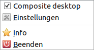
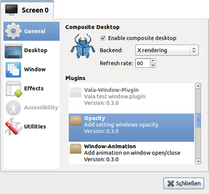
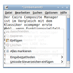
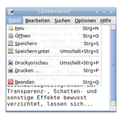
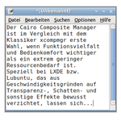

Cairo Composite Manager
Archivierte Anleitung
Dieser Artikel wurde archiviert, da er - oder Teile daraus - nur noch unter einer älteren Ubuntu-Version nutzbar ist. Diese Anleitung wird vom Wiki-Team weder auf Richtigkeit überprüft noch anderweitig gepflegt. Zusätzlich wurde der Artikel für weitere Änderungen gesperrt.
Zum Verständnis dieses Artikels sind folgende Seiten hilfreich:
In den großen Desktop-Umgebungen werden 3D-Effekte entweder über interne Funktionen realisiert oder durch Compiz bereitgestellt. Wer dagegen Wege abseits des Massengeschmacks beschreiten möchte, stellt schnell fest, dass hier (für Linux-Verhältnisse) bisher relativ wenig Auswahl vorhanden war.
Der Cairo Composite Manager  ist im Vergleich mit dem Klassiker xcompmgr erste Wahl, wenn Funktionsvielfalt und Bedienkomfort wichtiger sind als ein geringer Ressourcenbedarf. Speziell bei LXDE bzw. Lubuntu, das aus Geschwindigkeitsgründen auf Transparenz-, Schatten- und sonstige Effekte bewusst verzichtet, lassen sich interessante optische Gestaltungsmöglichkeiten erzielen.
ist im Vergleich mit dem Klassiker xcompmgr erste Wahl, wenn Funktionsvielfalt und Bedienkomfort wichtiger sind als ein geringer Ressourcenbedarf. Speziell bei LXDE bzw. Lubuntu, das aus Geschwindigkeitsgründen auf Transparenz-, Schatten- und sonstige Effekte bewusst verzichtet, lassen sich interessante optische Gestaltungsmöglichkeiten erzielen.
Weitere Alternativen sind unter Composite-Manager zu finden.
Installation¶
 Die Anwendung ist nicht in den offiziellen Paketquellen enthalten. Daher nutzt man zur Installation ein "Personal Package Archiv" (PPA) [1].
Die Anwendung ist nicht in den offiziellen Paketquellen enthalten. Daher nutzt man zur Installation ein "Personal Package Archiv" (PPA) [1].
PPA¶
Adresszeile zum Hinzufügen des PPAs:
ppa:shnatsel/cairo-compmgr
Hinweis!
Zusätzliche Fremdquellen können das System gefährden.
Ein PPA unterstützt nicht zwangsläufig alle Ubuntu-Versionen. Weitere Informationen sind der  PPA-Beschreibung des Eigentümers/Teams shnatsel zu entnehmen.
PPA-Beschreibung des Eigentümers/Teams shnatsel zu entnehmen.
Damit Pakete aus dem PPA genutzt werden können, müssen die Paketquellen neu eingelesen werden.
Nach dem Aktualisieren der Paketquellen kann folgendes Paket installiert [2] werden:
cairo-compmgr (ppa)
 mit apturl
mit apturl
Paketliste zum Kopieren:
sudo apt-get install cairo-compmgr
sudo aptitude install cairo-compmgr
Ab Ubuntu 12.10¶
Die Version aus dem PPA benötigt zwingend die Bibliothek libvala-0.10. Diese ist ab Ubuntu 12.10 nur noch in einer neueren Version in den offiziellen Paketquellen enthalten. Um unter 12.10 oder neuer dennoch über das PPA installieren zu können, muss man vorher das Paket libvala-0.10  aus Ubuntu 12.04 manuell herunterladen und installieren. Danach kann die Installation wie oben angegeben erfolgen.
aus Ubuntu 12.04 manuell herunterladen und installieren. Danach kann die Installation wie oben angegeben erfolgen.
Verwendung¶
 Bei Ubuntu-Varianten mit einem Anwendungsmenü kann das Programm über den Eintrag
"Systemwerkzeuge -> Cairo Composite Manager"
gestartet [3] werden (Root-Rechte sind nicht erforderlich). Nach dem Programmstart findet man ein Symbol  im Benachrichtigungsfeld des Panels wieder. Das De-/Aktivieren der Composite-Effekte, die Einstellungen und der Schalter zum Beenden des Programms werden über einen rechten Mausklick
im Benachrichtigungsfeld des Panels wieder. Das De-/Aktivieren der Composite-Effekte, die Einstellungen und der Schalter zum Beenden des Programms werden über einen rechten Mausklick  auf das Symbol angezeigt.
auf das Symbol angezeigt.
Wer das Programm dauerhaft nutzen möchte, sollte sich einen Autostart-Eintrag einrichten.
Einstellungen¶
 Die Konfiguration erfolgt mittels eines übersichtlichen Menüs aus vertikalen Reitern (Tabs). Je nachdem, welche Erweiterungen an- bzw abgeschaltet wurden, sind mache Reiter deaktiviert (grau beschriftet). Sind mehrere Bildschirme angeschlossen, können diese (
Die Konfiguration erfolgt mittels eines übersichtlichen Menüs aus vertikalen Reitern (Tabs). Je nachdem, welche Erweiterungen an- bzw abgeschaltet wurden, sind mache Reiter deaktiviert (grau beschriftet). Sind mehrere Bildschirme angeschlossen, können diese (Screen 0, Screen 1, usw.) getrennt verwaltet werden. Die Reiter im Einzelnen:

"General":
Auswahl möglicher Effekte. Diese sind über Plugins realisiert, die sich einzeln an- oder abschalten lassen."Desktop":
Hintergrundbild (entweder das augenblicklich benutzte oder Auswahlmöglichkeit) und Mosaik-Effekt (wenn aktiv)"Window":
Aktivierte Plugins, die sich auf die Fensterdarstellung auswirken, konfigurieren"Effects":
Aktivierte Plugins, die sich auf die andere Elemente (wie z.B. Menüs) auswirken, konfigurieren"Accessibility":
Aktivierte Plugins, die sich auf die Barrierefreiheit auswirken, konfigurieren (bisher keine enthalten)"Utilities":
Tastenkürzel für Screenshots (Bildschirmfotos) und Fenstertransparenz
Eigene Einstellungen werden im Ordner ~/.config/cairo-compmgr/ gespeichert.
Erweiterungen¶
Folgende Plugins sind bei einer Standardinstallation vorhanden:
|  |
| Kontextmenü |
|  |
| Transparentes Menü |
|  |
| Fensterschatten |
Automate
Freeze
Magnifier
Vala-Window-Plugin
Decoration
Window-Animation
Opacity
Perf
Clone
Shadow
Mosaic
Fade
Menu-Animation
Snapshot
Damit müssten genug Möglichkeiten vorhanden sein, die man ausprobieren und beliebig miteinander kombinieren kann.
Problembehebung¶
Screenlets¶
In Kombinationen mit Screenlets wurde beobachtet, dass diese vom Desktop verschwinden können, wenn man den Cairo Composite Manager deaktiviert oder beendet. Abhilfe schafft ein Neustart der betroffenen Screenlets über den "Screenlets Manager".
 Übersichtsartikel
Übersichtsartikel- Erstellt mit Inyoka
-
 2004 – 2017 ubuntuusers.de • Einige Rechte vorbehalten
2004 – 2017 ubuntuusers.de • Einige Rechte vorbehalten
Lizenz • Kontakt • Datenschutz • Impressum • Serverstatus -
Serverhousing gespendet von